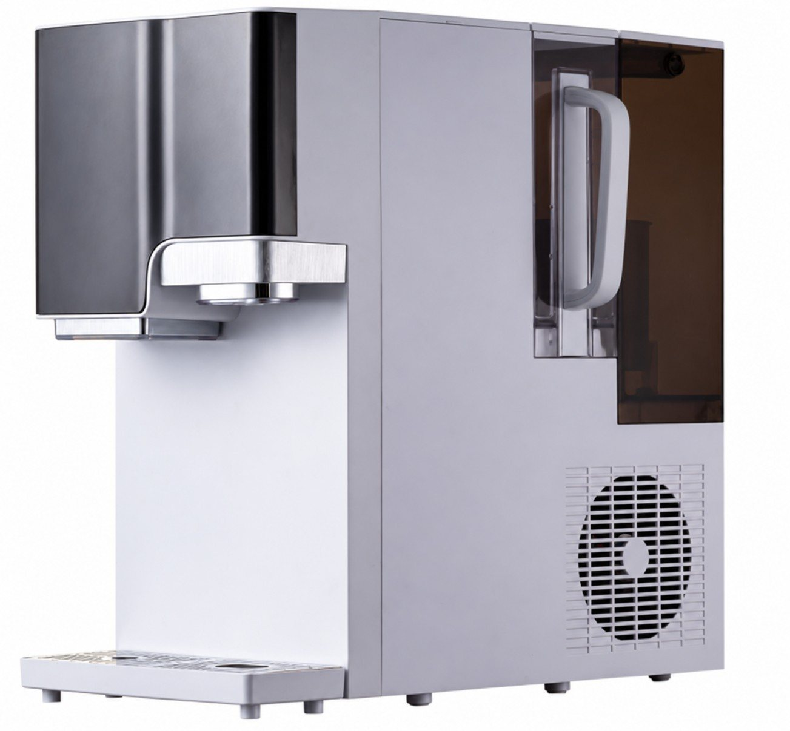

Countertop
CountertopWT-CT19
RO purifier with ice, hot and cold water
Get a QuoteOEM / ODM · Water Purifiers
ROPureOEM supplies finished water purification systems to brand owners and distributors worldwide. Countertop RO purifiers, under-sink RO systems, water softeners, shower filters and faucet filters — built to your brand, your market and your specification.
Tell us your target market and model, and we will confirm the exact certificate list for that model before you order.

Five ranges, 62 confirmed models. Pick a range to see every model in it.

Kitchen RO systems for brands.
17 models→Plug-in RO dispensers, no installation.
14 models→
Household and light-commercial softeners.
4 models→
Finished shower filters and cartridges.
14 models→
Tap-mounted filters for kitchen and bath.
13 models→The models brand owners ask for first.
CountertopRO purifier with ice, hot and cold water
Get a Quote Countertop
CountertopRO purifier with heating jug
Get a Quote Countertop
CountertopCountertop hydrogen-water RO dispenser
Get a QuoteUnder-SinkUnder-sink hydrogen-water RO purifier
Get a Quote Under-Sink
Under-SinkTool-free pull-out cartridge RO system
Get a Quote Under-Sink
Under-Sink800 GPD under-sink RO purifier
Get a QuoteOur customers are brands and distributors adding a water line, or replacing an existing line with a ready model. If you are starting a new product line, tell us the form factor you need — countertop, under-sink, softening, shower or faucet — and we will point you to the models that fit. Start with a quote request →
Approve a sample, including branding and packing, before bulk production.
Specifications, branding and packaging are confirmed for your model and market — before you commit.
Tell us your target market and model, and we will confirm the exact certificate list for that model.